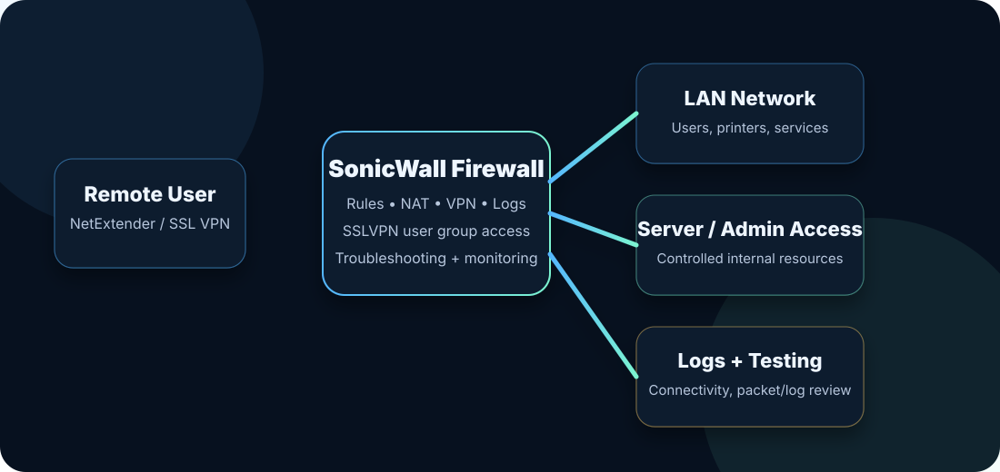

SonicWall Firewall & VPN Lab
Firewall, NAT, SSL VPN/NetExtender access, user group access, logs and connectivity troubleshooting.

Project overview
This lab is designed to show practical network security and remote access support skills using SonicWall-style firewall concepts. It focuses on how users securely connect from outside the network, how firewall rules control access, and how logs help with troubleshooting.
Portfolio value: This project connects my real VPN support exposure with a structured firewall/security lab that is relevant for MSP, systems support, cloud support and network support roles.
What I focused on
- Firewall rules: understanding how allow/deny rules control traffic between zones.
- SSL VPN access: documenting the access flow for a remote user using NetExtender / SSL VPN.
- User group access: showing how membership in an SSLVPN/SSL-VPN group affects VPN access.
- NAT concepts: understanding how internal services can be exposed or protected through NAT rules.
- Logs and troubleshooting: reviewing connection attempts, failed access, authentication checks and firewall logs.
- Support process: documenting how I would troubleshoot a user who cannot connect remotely.
Example troubleshooting workflow
- Confirm the user, device, network and exact VPN error.
- Check if the user is in the correct SSLVPN/SSL-VPN access group.
- Confirm MFA or password status if identity is involved.
- Check NetExtender client version and basic internet connectivity.
- Review firewall/VPN logs for denied authentication or policy blocks.
- Test access again and document the final resolution.
Skills demonstrated
Next improvements
- Add sanitized screenshots from a lab or training firewall interface.
- Add a simple network diagram with WAN, LAN, VPN and internal resources.
- Add a documented break/fix scenario for a user not in the correct SSLVPN group.